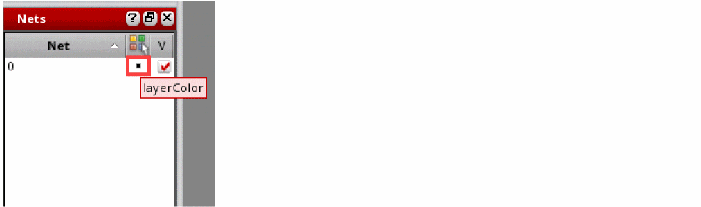

B
Virtuoso 3D Viewer
Use the Virtuoso® 3D Viewer environment to review the 3D mesh created by the AXIEM simulator for your electromagnetic models.
This chapter contains the following sections:
- Prerequisites for Running the Virtuoso 3D Viewer
- Launching the 3D Viewer
- The 3D Viewer Graphical User Interface
Prerequisites for Running the Virtuoso 3D Viewer
The Virtuoso 3D Viewer is not available in Virtuoso by default. To enable the 3D Viewer, do the following:
-
Set the
CDS_USE_OPENGLshell environment variable before running Virtuoso. This variable enables OpenGL, which is required to open the 3D Viewer environment. -
Ensure that your X11 server supports the GLX extension that enables 3D graphics.
Use thexdpyinfoutility to check whether the GLX extension is enabled:
If GLX is enabled,$ xdpyinfo | grep GLX => GLXxdpyinforeturnsGLX. If not, refer to the user manual of your X11 server environment to learn how to enable the GLX extension.
Using Virtuoso with OpenGL Enabled on Exceed onDemand
Certain versions of the OpenText Exceed onDemand connectivity solution do not support the resumption of applications that use OpenGL.
If you suspend an Exceed client session on which Virtuoso is running with OpenGL enabled, and then resume that Exceed session, you might not be able to resume Virtuoso. To prevent this when OpenGL is enabled, it is recommended that you close all open Virtuoso sessions before suspending the Exceed onDemand client session.
Launching the 3D Viewer
The 3D Viewer is currently used only to view a mesh created by the AXIEM simulator for an electromagnetic model created in the Electromagnetic Solver assistant. Therefore, you can open the 3D Viewer only after creating a model to be simulated by AXIEM.
You launch the 3D Viewer by using either of the following two commands on the toolbar of the Electromagnetic Solver assistant:
-
Open Simulator – Generate Mesh: Creates a mesh by using AXIEM, saves it in a
.vmeshfile, and launches the 3D Viewer to display the generated mesh. -
Open Simulator – View 3D Mesh: Opens the most recent
.vmeshfile in the 3D Viewer.
Related Topic: Reviewing the Mesh Created by AXIEM in Virtuoso 3D Viewer
The 3D Viewer Graphical User Interface
The 3D Viewer graphical user interface contains the following elements:
Canvas
The canvas is the area where the mesh created by the solver is displayed. It shows all shapes and nets selected for the model.
By default, you see the top view of the mesh, which appears to be in 2D, but you can click and hold the left mouse button and then slightly drag the pointer in the direction of your choice to rotate and view the 3D mesh. The orientation axes at the bottom left corner of the canvas shows the current direction of the x, y, and z axes providing guidance for rotation.
Menus
The 3D Viewer contains five menus described in this section.
| Menu Command | Icon | Description |
|
Fits the mesh in the given canvas area. |
||
|
Scales the mesh on the z-axis by the selected factor. This command provides eight predefined scaling factors to choose from. The scaled z-axis allows you to clearly see the thin layers or to view the mesh between the layers. |
||
|
Displays or hides the orientation axes on the canvas area Displays or hides the edges of the mesh. Hide the edges when you want to view the solid metal. |
||
|
Provides commands to show or hide dockable assistants. Provides commands to show or hide toolbars.
This is the standard Virtuoso Workspaces menu command. For details, see Provides commands to close the currently displayed or all the open tabs. |
||
|
This is the standard Virtuoso Help menu. For details, see |
Toolbars
The 3D Viewer contains the following toolbars:
View
Provides functions to zoom the displayed mesh to the required level or to look at the mesh from different angles.
For details, see the
Display Options
Provides functions to display or hide the orientation axes or the edges of the mesh.
For details, see the
Workspaces
Provides functions to create or open a workspace. You can use a workspace to change the way you view your data by choosing what assistant panes and toolbars appear in your window, where they appear, and whether each assistant pane is docked or floating.
By default, the 3D Viewer shows the EM_Solver workspace.
For more details on how to create your own workspace or to toggle assistants, see
Assistants
The 3D Viewer contains three assistants:
Layers Assistant
The Layers assistant provides controls to manage the visibility of layers in the mesh. When you open a mesh, the Layers assistant is displayed by default, docked in the left of the window.
The Layers assistant displays the names and colors of the layers on which the selected geometry objects are drawn in the layout view. The name and color of each layer is retrieved from the
While reviewing a mesh, use the check box for a layer to control the visibility of that layer. This allows you to focus on specific layers and the shapes placed on them.
Nets Assistant
The Nets assistant lets you manage the visibility of nets and the metal islands electrically connected to them. When you open a mesh, the Nets assistant is displayed by default, docked below the Layers assistant.
The Nets assistant displays a list of nets connected to the shapes selected for the model. Use the check box to the right of each net to control the visibility of that net and the metal islands connected to it.
This assistant also lets you color the nets and the shapes connected to them in two modes:
-
Use layer color: (Default) Uses the color of the layer on which the net is placed. In this mode, the color icon against each net is switched to layerColor mode.
 -
Use net color: Uses a unique color for each net and the metal island connected to it. To enable this mode, click Highlight Color in the column header.
The 3D Viewer assigns a unique color to each net and displays that color next to the net name in the assistant. If all the available colors are used, some nets will be assigned the same colors.
The color of the metal islands is also changed to match the color of the connected net.
Annotations
The Annotations assistant lets you explore bad geometries for which the electromagnetic solver returns high aspect ratio (length:width) errors. By default, the annotations in this assistant are categorized based on their severity, as shown below.
Virtuoso 3D Viewer considers a threshold of 1000 to distinguish between errors and warnings. A warning annotation is added to a geometry with an aspect ratio below the threshold value. An error annotation is added to a geometry with the aspect ratio above the threshold.
For each annotation, the severity, visibility status, ratio, layer name, and net name are displayed. The Ratio column shows the ratio between the two sides of a triangular mesh element.
To identify the geometry associated with a particular annotation, double click on its row. 3D Viewer highlights the corresponding geometry in the mesh and zooms to bring that in view.
The following example shows geometries highlighted in different colors.
By default, the geometries are highlighted in yellow. You can choose a different color in the Highlight Color column of the Annotations assistant.
You can also hide or show layers and use the Zoom In toolbar command to magnify the area where an annotation is added.
Return to top